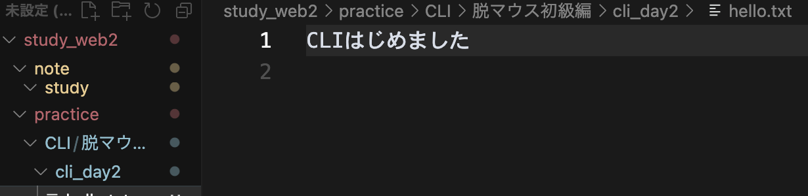
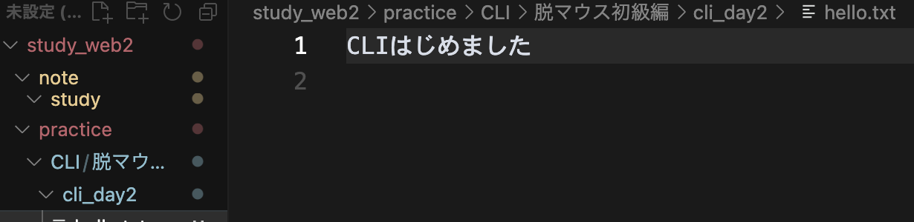
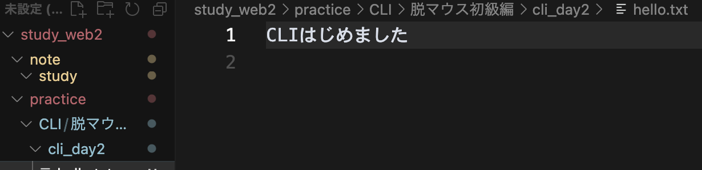

- ターミナルを開いて、自分の場所（フォルダ）を知ろう
- フォルダの中を見て、移動してみよう
pwd- 🔍 pwd = "Print Working Directory"
- ✅ 今いる場所（パス）を表示する。マウスでいうと「今どのフォルダを見てるか」。
ls- 🔍 ls = "List"
- ✅ 現在のフォルダ内にあるファイル・フォルダを一覧表示。
cd ~/Desktop- 🔍 cd = "Change Directory"
- ✅ デスクトップ（~/Desktop）に移動。~はホームディレクトリの省略記号。
pwd
ls- ✅ デスクトップに移動できたか再確認！

メモ:
・bquote> 状態:
入力待ち状態（マルチラインモード）でターミナルが迷子。タグの閉じ忘れやエラー文字の入力等が原因になることがい多い。
bquote> 状態になったら：
Ctrl + C を押してリセット！（一番安全）
- フォルダやファイルをコマンドで作れるようになる
# リポジトリ直下にディレクトリ作成
mkdir cli_day2
# practice/CLI/cli_day2を作成（親ディレクトリがない場合は同時作成）
mkdir -p "practice/CLI/脱マウス初級編/cli_day2"- 🔍 mkdir = "Make Directory"
- ✅ 「cli_day2」という名前のフォルダを作成
# リポジトリ直下の任意ファイルに移動
cd cli_day2
# 任意のディレクトリ内ファイルに移動/日本語を含むパスには必ずクォートを付ける
cd "practice/CLI/脱マウス初級編/cli_day2"- ✅ 作ったフォルダに移動
touch hello.txt- 🔍 touch = 空のファイルを作るコマンド
- ✅ hello.txt という空のテキストファイルを作成
echo "CLIはじめました" > hello.txt- 🔍 echo = 文字列を表示（出力）するコマンド
- ✅ >でファイルに書き込み。上書き保存される。
cat hello.txt- 🔍 cat = "concatenate"（つなげる）の略
- ✅ ファイルの中身を表示（読み取り専用）

メモ:
・コマンドとファイル名の区切り等は半角スペースを空ける
・日本語を含むパスには必ずクォートを付ける
・ルート直下にファイルを置いた後に、同ファイル名で違うディレクトリに作ったらターミナルが混乱してエラー。削除してから実行してもエラー。一度リセットするが吉。紛らわしいことはしない方が吉。
・Ctrl+Cはターミナルの状態はリセットしない
[エラー内容と解決方法]
- 基本的なファイル操作をマウスなしで行う
mv hello.txt intro.txt- 🔍 mv = "Move"（移動）
- ✅ ファイル名の変更にも使える。ここではリネーム。
cp intro.txt intro_copy.txt- 🔍 cp = "Copy"
- ✅ ファイルをコピーして、複製を作る
rm intro_copy.txt- 🔍 rm = "Remove"
- ⚠️ 完全削除。ゴミ箱はなし！慎重に。
ls- ✅ ファイルがどう変化したか確認
一言メモ:
・Tab補完がとても便利！ファイル名やディレクトリ名の途中まで入力してTabキーを押すと、自動で補完してくれる
・長いファイル名やパスを全部手入力する必要がなくなって、タイピングミスも防げる
・特に日本語を含むパスでは、Tab補完を使うとクォートも自動でつけてくれるので便利
・ファイル操作の基本（mv, cp, rm）をマスターすると、マウスでの右クリックメニューが不要になる
今日の気づき：
cdコマンドはフォルダ専用、ファイルの中身を見るときはcatコマンド - コマンドには適材適所がある！
- 絶対パスと相対パスを自由自在に使い分けられるようになる
- フォルダ間の移動で迷わなくなる
cd ..- 🔍 .. = 1つ上のフォルダ
- ✅ 1階層上に戻る
cd ../..- ✅ 2階層上に戻る（.. を続けて使える）
cd ~/Desktop- 🔍 ~ = ホームディレクトリ
- ✅ デスクトップへ一気に戻る「絶対パス」
cd "practice/CLI/脱マウス初級編"- ✅ これが「相対パス」。現在地からの距離感で移動する
pwd
cd ./cli_day2
pwd- 🔍 ./ = 現在のディレクトリ
- ✅ 明示的に「今いる場所から」を示す
1. 問題1: ホームディレクトリから、一発でDesktopに移動してください
2. 問題2: 現在地から2つ上の階層に移動してください
3. 問題3: 絶対パスを使って、study_web2フォルダに移動してください

一言メモ:
・絶対パス（～から始まる）は「住所」、相対パス（..や./）は「道案内」の感覚
・迷ったら pwd で現在地確認！
- マウスでの「ファイル検索」をコマンドで実現
- 大量のファイルから目的のものを素早く見つける
find . -name "*.txt"- 🔍 find = ファイル・フォルダ検索
- ✅ 現在地（.）から、.txtで終わるファイルを全て検索
find ~ -name "intro*"- ✅ ホームディレクトリから、introで始まるファイルを検索
ls -la- 🔍 ls -la = 詳細リスト表示
- ✅ 隠しファイル（.で始まる）も含めて、権限・サイズ・更新日時を表示
grep "CLI" *.txt- 🔍 grep = テキスト検索
- ✅ .txtファイルの中から「CLI」という文字を含む行を検索
history | grep "cd"- 🔍 history = コマンド履歴
- ✅ 過去に実行したcdコマンドを検索
1. 問題1: 現在のディレクトリから、.mdファイルを全て見つけてください
2. 問題2: ファイルの中身に「脱マウス」という文字が含まれるファイルを見つけてください
3. 問題3: 過去に実行したmkdirコマンドの履歴を表示してください

一言メモ:
・find + grep の組み合わせで、マウスの「検索機能」完全再現！
- コマンドラインでファイル編集ができるようになる
- メモ帳感覚でテキスト作成・編集
nano sample.txt- 🔍 nano = 初心者向けテキストエディタ
- ✅ 直感的にファイル編集が可能
nanoの基本操作:
- Ctrl + O: 保存
- Ctrl + X: 終了
- Ctrl + K: 行を切り取り
- Ctrl + U: 貼り付け
echo "1行目のテキスト" >> log.txt
echo "2行目のテキスト" >> log.txt- 🔍 >> = 追記モード
- ✅ ファイルの末尾に内容を追加（上書きしない）
head -5 log.txt
tail -5 log.txt- 🔍 head = 先頭行表示, tail = 末尾行表示
- ✅ 大きなファイルの一部だけを確認
1. 問題1: memo.txtファイルを作成し、今日の感想を3行書いてください
2. 問題2: 既存ファイルの末尾に「追記テスト」を追加してください
3. 問題3: 長いファイルの最初の10行だけを表示してください
一言メモ:
・ターミナルの履歴は自動保存されている！
- 高速操作のためのショートカットをマスター
- 実際の作業シーンで小技を活用
| 操作 | 効果 | 実用度 |
|---|---|---|
| ↑ / ↓ | 入力履歴の呼び出し | ⭐⭐⭐⭐⭐ |
Tabキー | コマンド・ファイル名の補完 | ⭐⭐⭐⭐⭐ |
Ctrl + C | 実行中のコマンドを止める | ⭐⭐⭐⭐⭐ |
Ctrl + L | 画面をクリア（clearと同じ） | ⭐⭐⭐⭐ |
Ctrl + A | カーソルを行頭に移動 | ⭐⭐⭐⭐ |
Ctrl + E | カーソルを行末に移動 | ⭐⭐⭐⭐ |
Ctrl + U | 行全体を削除 | ⭐⭐⭐ |
Ctrl + K | カーソル位置から行末まで削除 | ⭐⭐⭐ |
Ctrl + W | 前の単語を削除 | ⭐⭐⭐ |
Ctrl + R | コマンド履歴から検索 | ⭐⭐⭐⭐ |
【演習1】履歴活用
先ほど実行したls -laコマンドを履歴から呼び出して再実行してください
【演習2】Tab補完マスターpractice/CLI/脱マウス初級編/まで、Tabキーだけで入力してください
【演習3】高速画面整理
ターミナルが情報だらけになったら、一瞬で画面をクリアしてください
【演習4】間違い修正
長いコマンドを入力中に、行頭に戻って修正してください
【演習5】カーソル操作
コマンド入力中に、行末に一瞬でジャンプしてください
【演習6】一括削除
入力中のコマンド行を全部消去してください
【演習7】部分削除
カーソル位置から行末まで削除してください
【演習8】単語削除
入力中の最後の単語だけを削除してください
【演習9】履歴検索
過去のcdコマンドを検索機能で見つけてください
【演習10】コンボ技
履歴検索→Tab補完→実行を1つの流れで行ってください
スクリーンショット:
小技習得度チェック:
- [ ] 履歴呼び出し（↑↓）
- [ ] Tab補完
- [ ] 画面クリア（Ctrl+L）
- [ ] カーソル移動（Ctrl+A, Ctrl+E）
- [ ] 各種削除技（Ctrl+U, Ctrl+K, Ctrl+W）
- [ ] 履歴検索（Ctrl+R）
一言メモ:
・
- 実行中のプログラムを管理できるようになる
- システムの状態を把握する
ps aux- 🔍 ps = 実行中のプロセス一覧
- ✅ 現在動いているプログラムを確認
top- 🔍 top = リアルタイムシステム監視
- ✅ CPU使用率、メモリ使用量をリアルタイム表示（qで終了）
df -h- 🔍 df -h = ディスク使用量表示
- ✅ ハードディスクの空き容量を確認
date
cal- ✅ 現在の日時とカレンダー表示
whoami- ✅ 現在ログインしているユーザー名を表示
1. 問題1: 現在実行中のプロセスでCPU使用率が高いものを見つけてください
2. 問題2: ディスクの使用率を確認してください
3. 問題3: 自分のユーザー名を確認してください
スクリーンショット:
一言メモ:
・システム管理もマウス不要！コマンドで全て把握可能
- 実際の作業シーンを想定した総合問題に挑戦
- 脱マウススキルの総仕上げ
🎯 シナリオ1：プロジェクト準備
新しいプロジェクト「web_project」を作成し、以下の作業をしてください：
1. ホームディレクトリに「web_project」フォルダを作成
2. その中に「html」「css」「js」の3つのサブフォルダを作成
3. htmlフォルダに「index.html」ファイルを作成
4. index.htmlに「Hello, World!」と書き込む
5. 最終的なフォルダ構造を確認
🎯 シナリオ2：ファイル整理
現在のディレクトリが散らかっているので整理してください：
1. 全ての.txtファイルを見つける
2. 「backup」フォルダを作成
3. .txtファイルを全てbackupフォルダにコピー
4. 元の.txtファイルは削除
5. 作業結果を確認
🎯 シナリオ3：ログ調査
システムの問題を調査してください：
1. 現在実行中のプロセスを確認
2. ディスク使用量をチェック
3. 過去に実行したコマンド履歴から、問題がありそうなコマンドを探す
4. 調査結果をreport.txtにまとめる
🎯 シナリオ4：緊急対応
間違って重要なファイルを変更してしまいました：
1. バックアップからファイルを復元
2. 変更履歴を確認
3. 再発防止のためのメモをcaution.txtに作成
4. 今後気をつけるポイントを記載
- [ ] マウスを一切使わずに作業完了
- [ ] Tab補完を効果的に活用
- [ ] ショートカットキーを5種類以上使用
- [ ] エラーが発生した際、自力で解決
- [ ] 作業時間：各シナリオ10分以内
完了シナリオ:
- [ ] シナリオ1
- [ ] シナリオ2
- [ ] シナリオ3
- [ ] シナリオ4
一言メモ:
・
- ドラッグ&ドロップ以外の全操作をマウスなしで実行
- 脱マウスマスター認定を獲得！
制限時間：30分
条件：マウス・トラックパッド使用禁止
課題1：環境構築（5分）
project_final/
├── src/
│ ├── components/
│ └── utils/
├── tests/
├── docs/
└── README.mdこの構造のプロジェクトを作成し、README.mdに「脱マウス達成！」と記載
課題2：ファイル操作（10分）
1. 5つのテストファイル（test1.txt〜test5.txt）を作成
2. 各ファイルに異なる内容を書き込み
3. test3.txtをtest3_backup.txtにコピー
4. test4.txtとtest5.txtを削除
5. 残ったファイルをbackupフォルダに移動
課題3：情報収集（10分）
1. システムの現在時刻を確認
2. ディスク使用量を調査
3. 実行中プロセスの中で最もCPUを使用しているものを特定
4. 今日実行した全コマンドの履歴をcommand_log.txtに保存
課題4：総合実践（5分）
1. 作業ディレクトリを任意の場所に変更
2. 隠しファイルも含めて全ファイルをリスト表示
3. 特定の文字列を含むファイルを検索
4. 最終的な成果をfinal_report.txtにまとめ
🥇 脱マウスマスター（90点以上）
- 全課題を制限時間内に完了
- ショートカットキーを自然に使用
- エラー発生時も冷静に対処
🥈 脱マウス上級者（75点以上）
- 8割以上の課題を完了
- 基本操作は完全習得
🥉 脱マウス中級者（60点以上）
- 6割以上の課題を完了
- 基本的なファイル操作は可能
達成課題:
- [ ] 課題1：環境構築
- [ ] 課題2：ファイル操作
- [ ] 課題3：情報収集
- [ ] 課題4：総合実践
認定レベル:
学習の振り返り:
・
今後の目標:
・
これであなたは完全脱マウスを達成しました！🎊
✅ 基本操作: pwd, ls, cd, mkdir, touch, cat
✅ ファイル操作: mv, cp, rm, nano
✅ 探索・検索: find, grep, history
✅ システム管理: ps, top, df
✅ 効率化: Tab補完、履歴活用、ショートカット
- 中級編: Git操作、SSH接続、shell scripting
- 上級編: vim mastery、正規表現、system administration
- 実践編: 実際の開発プロジェクトでの脱マウス活用
あなたは今、キーボードだけで自由自在にコンピュータを操る強いエンジニアです！ 💪✨